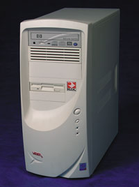

Олег Денисов, Сергей Назаров
Далеко не первый год мы являемся свидетелями соперничества AMD и Intel на рынке процессоров для ПК. Последним событием на этом фронте стало появление на сцене процессоров AMD Athlon XP и Intel Pentium 4 2,2 ГГц (с новым 0,13-мкм ядром Northwood и L2-кэшем объемом 512 Кбайт), положившее начало новому витку этой непрекращающейся гонки за гигагерцами. Поэтому мы и решили провести тестирование компьютеров, с тем чтобы выяснить, каким образом скорость выполнения различных программных приложений будет зависеть от особенностей работы процессоров AMD Athlon XP и Intel Pentium 4. Но сначала кратко остановимся на отличиях в архитектуре этих процессоров.
По сравнению с предыдущими процессорами Intel в архитектуре Intel Pentium 4 появилось несколько инноваций, главные из которых — гиперконвейерная (Hyper-Pipelined) технология, системная шина 400 МГц и набор инструкций для обработки мультимедийный данных SSE2 (Streaming SIMD Extensions 2).
Основная идея технологии Hyper-Pipelined состоит в значительном удлинении конвейера, который у Pentium 4 состоит из 20 стадий, при одновременном повышении эффективности алгоритмов предсказания ветвлений. Такая архитектура в первую очередь рассчитана на выполнение задач с большим потоком обрабатываемых данных и небольшим количеством ветвлений. Но если в задаче много ветвлений, это приводит к большому количеству ошибок предсказания и, как следствие, к частым сбросам конвейера, каждый из которых приводит к временной остановке конвейера на 20 рабочих тактов. И в этом недостаток процессоров с длинным конвейером — они слишком долго «приходят в себя» после обнаружения ошибочно предсказанного перехода. Однако нужно заметить, что наращивание длины конвейера неизбежно, так как на сегодня только за счет этого можно добиться дальнейшего увеличения тактовой частоты ядра процессора. Поэтому в будущем все производители будут вынуждены перейти на выпуск микропроцессоров этого типа, и в этом смысле компания Intel была пионером, запустив в производство процессор с длиной конвейера в 20 стадий.
Intel Pentium 4 имеет большое преимущество перед другими процессорами благодаря использованию системной шины с эффективной тактовой частотой в 400 МГц. Физически системная шина у Pentium 4 тактируется частотой в 100 МГц, однако благодаря технологии Quad Pumping по этой шине передается 4 блока данных за один такт. Так что результирующая рабочая частота системной шины составляет 400 МГц, а пропускная способность — 3,2 Гбайт/с. У AMD Athlon XP системная шина работает на результирующей рабочей частоте в 266 МГц (физическая частота — 133 МГц) с пропускной способностью в 2,1 Гбайт/с. Поэтому Pentium 4 значительно превосходит Athlon XP по скорости работы системной шины.
Более того, если Pentium 4 устанавливается в компьютер в сочетании с двухканальной Rambus-памятью (такая конфигурация поддерживается материнскими платами на чипсете Intel 850), то в этом случае суммарная пропускная способность оперативной памяти будет равна 3,2 Гбайт/с, поскольку по каждому каналу Rambus-памяти данные передаются со скоростью в 1,6 Гбайт/с. А вот в системах с Athlon XP и памятью DDR SDRAM (например, на материнских платах с чипсетами AMD 761 и VIA KT266A) пропускная способность шины памяти равна 2,1 Гбайт/с. И тут налицо превосходство Pentium 4 над Athlon XP. При этом интересно отметить, что обе платформы очень грамотно сбалансированы, так как пропускная способность системной шины и шины памяти у них совпадает!
В итоге получается, что по пропускной способности системной шины и шины памяти Intel Pentium 4 на текущий момент превосходит AMD Athlon XP. А потому Pentium 4 теоретически должен выигрывать у Athlon XP в задачах, где обрабатываются большие объемы исходных данных. Типичный пример таких задач — приложения для работы с видео- и аудиоданными, т. е. опять же задачи, на которых в полной мере проявляются все преимущества длинноконвейерной архитектуры Pentium 4.
В свою очередь, Athlon XP оснащен тремя FPU-конвейерами, причем способными выполнять по две инструкции за каждый такт. А вот Pentium 4 имеет только два блока FPU. Поэтому с расчетными задачами, требующими выполнения большого объема операций с плавающей точкой, Athlon XP должен справляться быстрее, чем Pentium 4.
Здесь, правда, есть одна тонкость. Дело в том, что оба процессора поддерживают выполнение ряда инструкций, обеспечивающих параллельную обработку данных с плавающей точкой. Для процессора Pentium 4 это инструкции из наборов SSE- и SSE2-команд. А для Athlon XP — из наборов SSE- и Enhanced 3DNow!-команд. Так что может возникнуть ситуация, когда, например, программа использует SSE2-инструкции, которые поддерживаются Intel Pentium 4, но не поддерживаются AMD Athlon XP, и в этом случае Pentium 4 при прочих равных условиях, по идее, должен работать быстрее Athlon XP.
Подводя черту, можно предположить, что Intel Pentium 4 будет опережать AMD Athlon XP в тех случаях, когда обрабатывается мощный поток входных данных, что приводит к интенсивной передаче информации по системной шине и шине памяти, а также при выполнении программ, скомпилированных в расчете на использование SSE2-инструкций.
В то же время AMD Athlon XP должен выигрывать в расчетных задачах с большим количеством вычислений с плавающей точкой и не требующих передачи большого объема данных по системной шине и шине памяти. Однако все эти доводы могут «не сработать», если исполняемый код оптимизирован под SSE2-инструкции, которые Athlon XP «не умеет» выполнять.
Вот почему, даже имея некоторое представление о характере вычислений, выполняемых ПО во время работы, нельзя сказать точно, на каком процессоре это ПО будет работать быстрее. И этот вывод подтверждается результатами испытаний.
Проведенное нами тестирование состояло из двух частей. В первой части проводилось испытание процессоров AMD Athlon XP и Intel Pentium 4 на скорость работы с реальными приложениями, а во второй — испытание компьютеров разных классов, от недорогих офисных ПК до мощных графических станций, с процессорами AMD Athlon XP и Intel Pentium 4 от 15 российских производителей с помощью набора стандартных тестовых пакетов. В данном материале результаты тестирования ПК приведены выборочно, для четырех машин, представляющих разные классы ПК. Полный вариант отчета об этих испытаниях будет опубликован на Web-сайте журнала «BYTE/Россия» (http://www.bytemag.ru).
Фото
| Процессор Intel Pentium 4.
|
Процессор AMD Athlon XP.
|
Тестирование процессоров на реальных приложениях
В испытаниях мы использовали три однопроцессорные и одну двухпроцессорную системы, любезно предоставленные нам компаниями «Интерком», «Р. и К. Системс», «ТИМ Компьютерс» и «Электрон-Сервис». Характеристики этих платформ приведены в табл. 1.
Таблица 1. Характеристики платформ для тестирования процессоров
| Платформа 1 | Платформа 2 | Платформа 3 | Платформа 4 | |
| Процессор | Intel Pentium 4 2,0 ГГц с L2-кэшем 256 Кбайт | Intel Pentium 4 2,2 ГГц с 0,13-мкм ядром Northwood и L2-кэшем 512 Кбайт | Два Intel Pentium 4 Xeon 2,0 ГГц с L2-кэшем 256 Кбайт | AMD Athlon XP 1900+ |
| Системная плата | Intel D850GB на чипсете Intel 850 | ASUS P4T-E на чипсете Intel 850 | Tyan Thunder S2603 на чипсете Intel 860 | ASUS A7V266-E на чипсете VIA KT266A |
| Память | 256 Мбайт RDRAM | 256 Мбайт RDRAM | 256 Мбайт RDRAM | 256 Мбайт DDR266 SDRAM |
| Видеоплата | ASUS AGP-V8200T5 Pure на чипсете NVIDIA GeForce3 Ti500 с 64 Мбайт видеопамяти | ASUS AGP-V8200T5 Pure на чипсете NVIDIA GeForce3 Ti500 с 64 Мбайт видеопамяти | MSI G3 Pro-VT64D VIVO (MS-8822) на чипсете NVIDIA GeForce3 с 64 Мбайт видеопамяти | ASUS AGP-V8200T5 Pure на чипсете NVIDIA GeForce3 Ti500 с 64 Мбайт видеопамяти |
| Жесткий диск | IBM Deskstar 60GXP IC35L040AVER07 | IBM Deskstar 60GXP IC35L040AVER07 | Seagate Cheetah 73LP ST373405LW | IBM Deskstar 60GXP IC35L040AVER07 |
Во время проведения испытаний на стендах выполнялись следующие тесты: синтетические процессорные тесты из пакета Passmark PerformanceTest 3.5, решение нелинейного дифференциального уравнения и архивация набора файлов, тестовые скрипты из пакета PS5Bench 1.11 Advanced и тестовый скрипт с типичным набором операций в среде Adobe Photoshop 6.0.1, OpenGL-тесты из пакета SPECviewperf 6.1.2, тесты на скорость финального рендеринга 3D-сцен из пакета CineBench 2000 1.0, тесты на скорость конвертирования видеороликов с помощью пакета Xmpeg 4.2a вместе с кодеком DivX 4.11. Все тесты выполнялись под управлением ОС Microsoft Windows XP Professional Build 2600. При этом 2D/3D-видеорежим от теста к тесту изменялся и для каждого из них выставлялся в соответствии с установками, рекомендованными их производителями.
Сразу же оговоримся, что да, мы «откатали» всю программу испытаний и на двухпроцессорной системе, но не будем комментировать эти результаты, поскольку они неадекватно отражают вычислительную мощность последней по очень простой причине — проведенные тесты были рассчитаны на испытания только однопроцессорных систем, так что использование двух процессоров не дало соответствующего прироста или даже приводило к падению производительности. Исключение из этого правила составляет, пожалуй, только пакет CineBench 2000 1.0, в состав которого входит специальный двухпроцессорный тест, на котором система с двумя процессорами Intel Pentium 4 Xeon 2,0 ГГц была в 1,76/1,53 раза быстрее, чем на одном процессоре Pentium 4 2,0 ГГц/Pentium 4 2,2 ГГц.
Несмотря на то, что целью проведенных тестов было измерение скорости работы реальных приложений, мы включили в программу и синтетические тесты на скорость работы процессора из пакета Passmark PerformanceTest 3.5 для выяснения, так сказать, теоретически возможной скорости их работы (табл. 2). С них мы и начнем обсуждение полученных результатов.
Таблица 2. Результаты выполнения тестов Passmark PerformanceTest 3.5
| Тест | Intel Pentium 4 2,0 ГГц | Intel Pentium 4 2,2 ГГц | 2 x Intel Pentium 4 Xeon 2,0 ГГц | AMD Athlon XP 1900+ |
| Maths — Addition | 447,9 | 493,6 | 491,6 | 395,4 |
| Maths — Subtraction | 445,2 | 494,2 | 492,3 | 397,8 |
| Maths — Multiplication | 350,2 | 387,0 | 377,7 | 347,9 |
| Maths — Division | 34,6 | 37,7 | 35,7 | 35,4 |
| Maths — Floating Point Addition | 377,9 | 415,2 | 410,3 | 352,7 |
| Maths — Floating Point Subtraction | 394,2 | 434,4 | 428,1 | 357,7 |
| Maths — Floating Point Multiplication | 364,4 | 401,0 | 396,4 | 358,4 |
| Maths — Floating Point Division | 51,5 | 57,0 | 52,1 | 89,8 |
| Maths — Maximum MegaFLOPS | 527,6 | 602,1 | 1049,1 | 696,3 |
| Maths Mark | 297,0 | 329,7 | 370,4 | 300,8 |
| Memory — Allocate small block | 189,6 | 207,2 | 189,2 | 413,5 |
| Memory — Read cached | 296,4 | 324,2 | 297,5 | 123,5 |
| Memory — Read uncached | 288,4 | 318,7 | 286,2 | 131,5 |
| Memory — Write | 215,7 | 239,3 | 214,2 | 175,5 |
| Memory Mark | 237,5 | 262,3 | 237,6 | 203,2 |
| MMX — Addition | 430,7 | 470,3 | 440,6 | 596,4 |
| MMX — Subtraction | 431,1 | 470,3 | 439,3 | 596,5 |
| MMX — Multiply | 419,0 | 463,9 | 435,5 | 587,8 |
| MMX — SSE/3Dnow! | 847,6 | 872,5 | 963,1 | 1047,3 |
| MMX Mark | 270,9 | 289,8 | 289,9 | 359,9 |
Как видно, на целочисленных операциях Intel Pentium 4 2,2 ГГц значительно опередил AMD Athlon XP 1900+, а вот на операциях с плавающей точкой лидер так и не выявился. В тестах на скорость чтения и записи данных в ОЗУ, как и следовало ожидать, с большим преимуществом победила система на Pentium 4 2,2 ГГц. А вот в тестах на скорость выполнения MMX-, SSE- и 3DNow!-инструкций AMD Athlon XP 1900+ вырвался вперед с большим отрывом. Заметим, что здесь идет речь именно об SSE-, а не о SSE2-инструкциях — последние этот процессор не поддерживает.
Закончив на этом с синтетическими тестами, перейдем к тестам на скорость решения нелинейного дифференциального уравнения и архивации наборов файлов (табл. 3).
Таблица 3. Результаты тестов на скорость решения нелинейного дифференциального уравнения и на скорость архивации набора файлов
| Тест | Intel Pentium 4 2,0 ГГц | Intel Pentium 4 2,2 ГГц | 2 x Intel Pentium 4 Xeon 2,0 ГГц | AMD Athlon XP 1900+ |
| Нелинейное дифференциальное уравнение. Использован исполняемый код, скомпилированный с генерацией кода под архитектуру x86 с установками по умолчанию | 7:05 | 5:30 | - | 1:36 |
| Нелинейное дифференциальное уравнение. Использован исполняемый код, скомпилированный с генерацией кода под архитектуру Pentium 4 с оптимизацией под процессор Pentium 4 | 7:07 | 5:29 | - | 1:36 |
| Нелинейное дифференциальное уравнение. Использован исполняемый код, скомпилированный с генерацией кода под архитектуру Athlon с оптимизацией под процессор Athlon | -, программа не запускается | -, программа не запускается | - | 1:29 |
| Архивация с помощью пакета WinAce 2.11 | 3:48 | 3:20 | 4:17 | 3:38 |
| Архивация с помощью пакета WinRAR 2.90 | 3:59 | 3:29 | 4:29 | 4:04 |
| Архивация с помощью пакета WinZip 8.1 Beta (build 4285) | 1:30 | 1:08 | 0:49 | 1:03 |
В тестах на скорость решения нелинейного дифференциального уравнения использовался исполняемый код, скомпилированный различными способами (компилятор — Compaq Visual Fortran 6.6). При тестировании на скорость архивации тестового набора файлов число директорий составляло 150, число файлов — 2396, суммарный объем файлов — 196 366 114 байт.
При решении нелинейного дифференциального уравнения выполняется большое количество операций с плавающей точкой, в которых сильно загружается сопроцессор (FPU), и здесь AMD Athlon XP 1900+ оказался бесспорным лидером. А вот архиваторы ведут себя по-разному, и явного победителя в этих тестах не оказалось. По ходу дела также заметим, что самым быстрым архиватором оказался WinZip 8.1 Beta.
В тестах на скорость обработки 2D-изображений в качестве наиболее распространенного программного продукта для работы с изображениями был выбран пакет Adobe Photoshop 6.0.1. Как видно из табл. 4, выполнение тестовых скриптов не выявило очевидного победителя. Так, в тестах на скорость геометрических расчетов и цветоделения выиграл AMD Athlon XP 1900+, зато в тестах с преимущественно попиксельной обработкой изображения впереди оказался Intel Pentium 4 2,2 ГГц.
Таблица 4. Длительность выполнения тестовых скриптов в среде Adobe Photoshop 6.0.1
| Тестовый скрипт | Intel Pentium 4 2,0 ГГц | Intel Pentium 4 2,2 ГГц | 2 x Intel Pentium 4 Xeon 2,0 ГГц | AMD Athlon XP 1900+ |
| PS5Bench 1.11 Advanced / 90° Rotation (поворот на 90°) | 8,6 | 8,8 | 12,8 | 9,2 |
| PS5Bench 1.11 Advanced / 9° Rotation (поворот на 9°) | 15,9 | 15,5 | 22,9 | 15,1 |
| PS5Bench 1.11 Advanced / 0,9° Rotation (поворот на 0,9°) | 14,0 | 13,8 | 20,1 | 13,1 |
| PS5Bench 1.11 Advanced / Gaussian Blur, 1,0 pixel (Гаусс-размытие, радиус — 1,0 пиксел) | 7,4 | 7,2 | 10,6 | 7,8 |
| PS5Bench 1.11 Advanced / Gaussian Blur, 3,7 pixels (Гаусс-размытие, радиус — 3,7 пиксела) | 12,9 | 12,8 | 17,5 | 14,4 |
| PS5Bench 1.11 Advanced / Gaussian Blur 85 pixels (Гаусс-размытие, радиус — 85 пикселов) | 13,7 | 13,6 | 15,2 | 15,5 |
| PS5Bench 1.11 Advanced / Unsharp Mask, 50%, 1 pixel (сглаживание резкости на 50% с радиусом в 1,0 пиксел) | 7,3 | 6,9 | 9,3 | 6,7 |
| PS5Bench 1.11 Advanced / Unsharp Mask, 50%, 3,7 pixels (сглаживание резкости на 50% с радиусом в 3,7 пиксела) | 13,4 | 13,1 | 17,7 | 14,6 |
| PS5Bench 1.11 Advanced / Unsharp Mask, 50%, 10 pixels (сглаживание резкости на 50% с радиусом в 10 пикселов) | 13,5 | 13,5 | 17,7 | 14,8 |
| PS5Bench 1.11 Advanced / Despeckle (удаление пятен) | 10,7 | 10,2 | 11,3 | 8,9 |
| PS5Bench 1.11 Advanced / RGB to CMYK (преобразование цветовой палитры из RGB- в CMYK) | 21,9 | 20,6 | 25,7 | 16,9 |
| PS5Bench 1.11 Advanced / Reduction, 60% (уменьшение изображения) | 3,0 | 3,1 | 4,7 | 3,2 |
| PS5Bench 1.11 Advanced / Lens Flare (световые блики) | 18,8 | 18,5 | 23,9 | 19,5 |
| PS5Bench 1.11 Advanced / Color Halftone (цветовые полутона) | 32,9 | 27,4 | 43,2 | 25,2 |
| PS5Bench 1.11 Advanced / NTSC Colors (NTSC-цвета) | 11,5 | 10,4 | 14,4 | 10,3 |
| PS5Bench 1.11 Advanced / Accented Edges Brush Strokes (акцент-границы) | 22,1 | 19,6 | 25,3 | 18,6 |
| PS5Bench 1.11 Advanced / Pointillize (поинтилайз) | 49,2 | 45,1 | 39,2 | 42,7 |
| PS5Bench 1.11 Advanced / Water Color (акварель) | 45,8 | 41,3 | 51,4 | 35,6 |
| PS5Bench 1.11 Advanced / Polar Coordinates (полярные координаты) | Error | Error | 34,0 | Error |
| PS5Bench 1.11 Advanced / Radial Blur (радиальное размытие) | 96,9 | 89,4 | 67,3 | 96,5 |
| PS5Bench 1.11 Advanced / Lighting Effects (эффект подсветки) | 10,0 | 9,2 | 12,5 | 9,1 |
| Тестовый скрипт с типичным набором операций | 1:00 | 0:57 | 1:24 | 1:03 |
Измерялась длительность выполнения тестовых скриптов из пакета PS5Bench 1.11 Advanced (с) и тестового скрипта с типичным набором операций (мин:с) в среде Adobe Photoshop 6.0.1 (1024 x 768 точек, 32 бита, 75 Гц).
В качестве ПО для обработки видеоданных были выбраны пакет Xmpeg 4.2a на пару с кодеком DivX 4.11, которые использовались для конвертирования видеороликов из формата MPEG-2 в формат MPEG-4. В этих тестах, как следует из табл. 5, со значительным преимуществом победил Intel Pentium 4 2,2 ГГц. Скорее всего, это вызвано тем, что использованное ПО было оптимизировано под набор инструкций SSE2.
Таблица 5. Скорость конвертирования видеороликов формата MPEG-2 в формат MPEG-4
| IDCT | Видеоролик N1 (flying.vob) | Видеоролик N2 (vdr.vob) | ||||||
| Intel Pentium 4 2,0 ГГц | Intel Pentium 4 2,2 ГГц | 2 x Intel Pentium 4 Xeon 2,0 ГГц | AMD Athlon XP 1900+ | Intel Pentium 4 2,0 ГГц | Intel Pentium 4 2,2 ГГц | 2 x Intel Pentium 4 Xeon 2,0 ГГц | AMD Athlon XP 1900+ | |
| DVD2AVI MMX | 20,4 | 20,2 | 28,4 | 16,7 | 18,0 | 19,6 | 29,1 | 16,5 |
| DVD2AVI SSEMMX | 19,4 | 21,1 | 28,7 | 16,9 | 18,5 | 19,7 | 29,1 | 16,6 |
| MMX iDCT | 18,9 | 20,1 | 28,4 | 16,3 | 18,1 | 19,2 | 28,2 | 16,1 |
| Optimized MMX iDCT | 19,5 | 21,0 | 28,4 | 17,2 | 18,7 | 19,6 | 28,9 | 16,8 |
| Fast SSE2 iDCT | 19,5 | 20,5 | 28,9 | N/A | 19,0 | 19,9 | 28,9 | N/A |
Измерялась скорость конвертирования двух тестовых видеороликов формата MPEG-2 (Video Resolution = 720 x 576, Frame Rate = 25 fps, длительность видеоролика N1/N2 — 751/748 кадров; 18,8/12,1 Мбайт) в видеоролики формата MPEG-4 (Video Resolution = 720 x 576, Frame Rate = 25 fps) с помощью пакета Xmpeg 4.2a и кодека DivX 4.11 (fps).
Для исследования скорости работы тестируемых систем при выполнении финального рендеринга 3D-сцен мы использовали тестовый пакет CineBench 2000 1.0 (табл. 6). Кроме того, выполнялись тесты из пакета SPECviewperf 6.1.2, которые моделируют работу OpenGL-приложений при визуализации 3D-объектов. Результаты приведены в табл. 7.
Во время выполнения рендеринга очень сильно загружается сопроцессор (FPU), а по мощности последнего пока лидирует AMD Athlon XP 1900+. Так что Athlon XP вполне закономерно победил в CineBench 2000 1.0. А вот в SPECviewperf 6.1.2 бесспорную победу одержал Intel Pentium 4 2,2 ГГц.
Таблица 6. Результаты выполнения тестов CineBench 2000 1.0
| Тест | Intel Pentium 4 2,0 ГГц | Intel Pentium 4 2,2 ГГц | 2 x Intel Pentium 4 Xeon 2,0 ГГц | AMD Athlon XP 1900+ |
| Shading (CINEMA 4D) | 15,94 | 17,93 | 15,13 | 16,09 |
| Shading (OpenGL) | 24,96 | 28,40 | 23,53 | 29,56 |
| GL-Factor | 1,57 | 1,59 | 1,57 | 1,84 |
| Raytracing (Single CPU) | 19,03 | 21,86 | 18,85 | 22,24 |
| Raytracing (Multiple CPU) | - | - | 33,51 | - |
| MP-Factor | - | - | 1,78 | - |
| Условия тестирования: видеорежим 1024 x 768 точек, 16 бит, 75 Гц. | ||||
Таблица 7. Результаты выполнения тестов SPECviewperf 6.1.2
| Тест | Intel Pentium 4 2,0 ГГц | Intel Pentium 4 2,2 ГГц | 2 x Intel Pentium 4 Xeon 2,0 ГГц | AMD Athlon XP 1900+ |
| AWadvs-04, Frames Per Sec | ||||
| 1 | 75,0 | 74,6 | 74,4 | 74,7 |
| 2 | 75,1 | 75,1 | 75,1 | 75,1 |
| 3 | 52,1 | 52,5 | 38,8 | 52,0 |
| 4 | 37,6 | 37,6 | 37,5 | 37,6 |
| 5 | 75,0 | 74,9 | 73,4 | 74,2 |
| 6 | 75,1 | 74,1 | 73,7 | 74,4 |
| 7 | 75,1 | 74,8 | 73,8 | 75,1 |
| 8 | 74,7 | 73,7 | 71,8 | 72,4 |
| 9 | 75,1 | 75,2 | 74,9 | 75,1 |
| 10 | 74,2 | 73,4 | 71,5 | 73,3 |
| 11 | 75,1 | 75,1 | 75,2 | 75,1 |
| Weighted Geometric Mean | 64,71 | 64,59 | 61,60 | 64,46 |
| DRV-07, Frames Per Sec | ||||
| 1 | 18,8 | 25,0 | 11,1 | 20,2 |
| 2 | 18,8 | 25,0 | 9,67 | 18,8 |
| 3 | 18,7 | 25,0 | 11,3 | 18,7 |
| 4 | 12,3 | 14,9 | 9,09 | 12,5 |
| 5 | 12,5 | 15,0 | 10,7 | 12,4 |
| Weighted Geometric Mean | 18,18 | 23,99 | 10,81 | 19,19 |
| DX-06, Frames Per Sec | ||||
| 1 | 30,0 | 25,0 | 32,0 | 25,0 |
| 2 | 28,5 | 25,1 | 26,1 | 25,0 |
| 3 | 37,6 | 37,4 | 37,5 | 37,5 |
| 4 | 31,3 | 25,0 | 33,4 | 25,0 |
| 5 | 37,6 | 37,6 | 37,3 | 37,4 |
| 6 | 37,2 | 37,6 | 37,5 | 37,6 |
| 7 | 31,4 | 25,0 | 32,2 | 25,0 |
| 8 | 18,8 | 18,8 | 18,8 | 18,8 |
| 9 | 31,1 | 25,0 | 32,1 | 25,0 |
| 10 | 37,6 | 37,5 | 37,5 | 37,5 |
| Weighted Geometric Mean | 31,03 | 27,16 | 31,50 | 27,14 |
| Light-04, Frames Per Sec | ||||
| 1 | 10,7 | 12,4 | 10,7 | 10,7 |
| 2 | 12,5 | 12,4 | 12,5 | 12,5 |
| 3 | 7,49 | 7,51 | 6,90 | 6,24 |
| 4 | 8,34 | 8,34 | 8,35 | 6,77 |
| Weighted Geometric Mean | 9,561 | 9,906 | 9,369 | 8,670 |
| MedMCAD-01, Frames Per Sec | ||||
| 1 | 74,9 | 75,1 | 60,8 | 75,1 |
| 2 | 74,3 | 74,1 | 58,6 | 74,0 |
| 3 | 37,4 | 37,4 | 37,6 | 37,4 |
| 4 | 42,7 | 74,3 | 41,8 | 73,6 |
| 5 | 24,8 | 25,2 | 24,2 | 24,8 |
| 6 | 16,3 | 17,8 | 14,8 | 18,0 |
| 7 | 18,8 | 24,9 | 18,5 | 21,7 |
| 8 | 20,4 | 25,1 | 20,1 | 21,1 |
| 9 | 19,5 | 25,0 | 18,7 | 18,8 |
| 10 | 16,0 | 16,0 | 14,7 | 16,0 |
| 11 | 25,0 | 25,0 | 24,2 | 25,0 |
| 12 | 25,1 | 25,0 | 24,4 | 25,0 |
| Weighted Geometric Mean | 30,27 | 34,07 | 28,18 | 32,53 |
| ProCDRS-03, Frames Per Sec | ||||
| 1 | 9,56 | 9,55 | 8,10 | 9,55 |
| 2 | 12,4 | 12,4 | 10,3 | 12,4 |
| 3 | 18,8 | 18,8 | 18,8 | 18,8 |
| 4 | 29,3 | 29,3 | 24,6 | 29,3 |
| 5 | 18,8 | 18,8 | 18,8 | 18,8 |
| 6 | 29,2 | 29,3 | 24,5 | 29,2 |
| 7 | 18,8 | 18,8 | 18,8 | 18,8 |
| 8 | 28,7 | 28,7 | 24,0 | 28,7 |
| 9 | 18,8 | 18,8 | 18,8 | 18,8 |
| 10 | 28,6 | 28,6 | 23,8 | 28,6 |
| Weighted Geometric Mean | 15,95 | 15,94 | 13,97 | 15,94 |
| Условия тестирования: видеорежим 1280 x 1024 точки, 16 бит, 75 Гц. | ||||
Какие же напрашиваются выводы из полученных результатов? Во-первых, результаты проведенных тестов довольно хорошо согласуются с теоретическими выкладками, приведенными в начале статьи.
Во-вторых, большое влияние на скорость работы того или иного ПО имеет степень его оптимизации под ту или иную процессорную архитектуру, или, говоря другими словами, поддержка наборов SIMD-инструкций. Если, например, исполняемый код программы вызывает SSE2-инструкции, то он будет быстрее работать на процессоре Intel Pentium 4.
И в-третьих, как показали полученные результаты, на текущий момент нет процессора, который бы лидировал сразу во всех приложениях. Так что выбор в пользу покупки компьютера на базе AMD Athlon XP или Intel Pentium 4 будет определяться конкретным набором программного обеспечения, с которым предстоит работать пользователю этого ПК.
Тестирование ПК
В качестве типичного примера современных машин на процессорах AMD Athlon XP и Intel Pentium 4 мы выбрали четыре из протестированных нами ПК: TeamXP и Wiener 4 как наиболее «продвинутые» и мощные системы и Sunrise SR A4X и LTRC-P4/1.9 как недорогие компьютеры начального уровня. Указанные в статье цены — это розничные цены испытывавшейся конфигурации (системный блок без монитора) в долларах (с учетом НДС) на 1 декабря 2001 г.
Мы испытывали машины с помощью ряда общеизвестных тестовых программ и вспомогательных утилит. Для определения общей производительности системы мы пользовались пакетами ZD Business Winstone 2001 1.0.2 и ZD Content Creation Winstone 2001 1.0.2, которые предназначены для измерения быстродействия ПК во время работы с самыми популярными программными пакетами.
Мы также использовали пакет ZD WinBench 99 2.0, который содержит тесты для измерения производительности графической (ZD Business Graphics WinMark 99, ZD High-End Graphics WinMark 99) и дисковой (ZD Business Disk WinMark 99, ZD High-End Disk WinMark 99) подсистем.
Кроме того, все машины прошли тест из пакета MadOnion 3DMark2001, предназначенного для измерения производительности компьютера при работе с 3D-графикой, и тесты на производительность процессора и подсистемы памяти из пакета SiSoft Sandra 2001te Standard 2001.5.8.11.
Помимо тестовых пакетов, мы использовали утилиты WCPUID 3.0d и EnTech PowerStrip 3.10, с помощью которых измерялись рабочие тактовые частоты центральных и графических процессоров и видеопамяти.
Все тесты проводились в 2D-видеорежиме с 32-битной глубиной цвета, разрешением 1280 x 1024 точки и частотой кадровой развертки 75 Гц, за исключением 3D-тестов из пакета MadOnion 3DMark2001, которые прогонялись в Direct3D-видеорежиме с 32-битной глубиной цвета, разрешением 1280 x 1024 точки и с отключением Vsync.
Все результаты, полученные во время испытаний, представлены в табл. 8. Они наглядно свидетельствуют о том, что на любом из двух процессоров (как AMD Athlon XP, так и Intel Pentium 4) можно собрать системы совершенно разного назначения — от недорогого офисного ПК до графической рабочей станции.
Помимо этого анализ конфигураций протестированных ПК указывает на то, что производительность машины в большой степени зависит не только от мощности процессора, но и от скорости работы других компонентов — оперативной памяти, видеокарты и дисковой подсистемы. Поэтому, например, компьютер с более мощным процессором может оказаться и медленнее конкурента с менее производительным процессором.
Таблица 8. Результаты тестирования компьютеров.
TeamXP
| Внешний вид ПК TeamXP.
|
Компоновка системного блока TeamXP.
|
Что в первую очередь выделяет TeamXP из всего ряда тестировавшихся ПК, так это богатейшие возможности обработки видео и звука, поскольку система была оснащена самой мощной графической картой (ASUS AGP-V8200T5 Deluxe с чипсетом NVIDIA GeForce3 Ti500, 64 Мбайт видеопамяти, S-Video TV-выходом, RCA TV-выходом, S-Video TV-входом, VR-выходом для подключения стереоочков) и лучшей полупрофессиональной звуковой платой (Creative SB Audigy Platinum с аудиопроцессором Creative Audigy, полным набором позолоченных внешних звуковых разъемов и также позолоченным одним внешним портом IEEE-1394) из выпускаемых на сегодняшний день для персональных компьютеров.
Плата Creative SB Audigy Platinum также комплектуется ИК-пультом дистанционного управления и панелью Creative Audigy Drive, которая установлена в самом нижнем из трех отсеков для внешних 5,25-дюймовых устройств и имеет коаксиальные и оптические SPDIF-входы/выходы, аналоговый стереовход, MIDI-вход и MIDI-выход, выход на наушники с регулятором уровня громкости, микрофонный вход с регулятором уровня усиления (с помощью последнего этот разъем можно также переключить в режим линейного входа), порт IEEE-1394 и ИК-порт.
Помимо этого TeamXP был оснащен другими высокопроизводительными компонентами — процессором AMD Athlon XP 1900+, 256 Мбайт оперативной DDR SDRAM-памяти от Kingston, материнской платой ASUS A7V266-E на чипсете VIA KT266A, двумя 40-гигабайтными винчестерами IBM Deskstar 60GXP IC35L040AVER07, объединенными в RAID-массив Level 0 с помощью RAID-адаптера Promise FastTrak100 TX2, что позволило ему показать высокие результаты в тестах на скорость работы (табл. 8).
Плюс к этому мы отметили такие достоинства системы, как качественный корпус IW-S508 300W от InWin (аккуратное исполнение, хорошие прочностные характеристики и защищенность от электромагнитного излучения, съемные боковые крышки, монтаж устройств во внешних отсеках без помощи инструментов, удобный доступ ко всем внутренним компонентам компьютера, качественный блок питания, ушко для навесного замка для блокировки физического доступа к содержимому системного блока), эффективный процессорный кулер Elan Vital 6FCUG9-C (имеет медное основание, термодатчик, закрепляемый на радиаторе кулера, и переменную скорость вращения вентилятора — от 2400 до 4800 об./мин), наличие двух дополнительных вентиляторов (установлены под блоком питания на задней панели и внизу на передней панели), 16x-скоростной DVD-ROM дисковод производства ASUSTeK, 24x/10x/40x-скоростного CD-RW накопитель от компании Plextor, дисковод Iomega Zip 250MB ATAPI, сетевой адаптер, мышь Logitech iFeel Mouse с обратной тактильной связью. Система также отличается прекрасными возможностями расширения (в дополнение к уже упомянутым — поддержка до 3 Гбайт DDR SDRAM-памяти, один слот AGP Pro, пять PCI-слотов, четыре USB-порта) и хорошей гарантийной поддержкой (два года гарантии на компоненты и сборку с возможностью обслуживания техники на месте эксплуатации).
Комплект поставки TeamXP дополняют стереоочки, ОС Microsoft Windows 2000 Professional, драйверы к оборудованию, набор 3D-игр (Star Trek New Worlds, Sacrifice, Messiah), антивирус DrWeb под DOS от компании «Диалог-Наука», паспорт к ПК и инструкция по эксплуатации компьютера на русском языке.
Стоил этот ПК, конечно же, немало — 2244 долл., однако, на наш взгляд, вполне разумно для машины с такой богатой комплектацией. Предоставила компьютер для тестирования компания «Тим Компьютерс» (http://www.team.ru)
В итоге TeamXP можно охарактеризовать как прекрасно спроектированный современный мультимедийный ПК, который идеально подойдет для использования в качестве видеомонтажной рабочей станции начального уровня или для построения небольшой компьютерной студии звукозаписи.
Wiener 4
|  | |
| Внешний вид ПК Wiener 4.
|
Компоновка системного блока Wiener 4.
|
Wiener 4 был оснащен самым быстрым на текущий момент процессором из семейства Intel Pentium 4 — Pentium 4 2,2 ГГц на новом 0,13-мкм ядре Northwood с L2-кэшем объемом 512 Кбайт, благодаря которому он продемонстрировал высокую производительность в синтетических тестах на скорость работы ЦПУ из пакета SiSoft Sandra 2001te (табл. 8). Во всех остальных тестах (табл. 8) этот ПК показал себя также с самой лучшей стороны.
Столь впечатляющие результаты Wiener 4 обеспечило то, что наряду с процессором Intel Pentium 4 2,2 ГГц в нем использованы и другие скоростные базовые компоненты — материнская плата ASUS P4T-E на чипсете Intel 850, 256 Мбайт RDRAM-памяти, графический адаптер ASUS AGP-V8200T5 Pure на чипсете NVIDIA GeForce3 Ti500 с 64 Мбайт видеопамяти, RAID-массив Level 0 на двух жестких 18-гигабайтных Ultra160 SCSI-дисках Fujitsu MAM3184MC и Ultra160 SCSI RAID-адаптер AMI MegaRAID Express 500 с кэш-буфером объемом 128 Мбайт.
Wiener 4 оказался единственным среди всех протестированных ПК, в котором были установлены гигабитный Ethernet-адаптер Intel PRO/1000 T Desktop Adapter (PWLA8390T) и комбинированный 2x/4x-скоростной DVD-RW (12x/10x/32x-скоростной CD-RW дисковод) HP DVD-Writer dvd100i, поддерживающий работу с носителями DVD-RW, DVD-ROM, CD-RW, CD-R и CD-ROM (DVD-R диски не поддерживаются). Плюс к этому ПК оснащался звуковой платой Creative SB Live! 5.1.
Выделялся Wiener 4 среди всех машин и системой охлаждения системного блока, построенной очень эффективно и нетрадиционно. Внутренний объем корпуса этого ПК разделен на две изолированные области — верхнюю и нижнюю — с помощью специальной вставки из поролона. В каждой из них создается мощный горизонтальный поток воздуха, обеспечивающий общее охлаждение внутренних компонентов: в нижней области воздух вбрасывается нижним дополнительным вентилятором на передней панели и выбрасывается через отверстия, расположенные внизу на задней панели; в верхней — вбрасывается через отверстия пластиковой заглушки на передней панели, которая установлена в одном из отсеков для внешних 5,25-дюймовых накопителей, а выбрасывается вентилятором блока питания и расположенным под ним дополнительным вентилятором.
Среди конструктивных достоинств Wiener 4 мы также отметили оригинальный дизайн корпуса; использование качественного надежного блока питания от компании Seventeam с датчиком оборотов вращения установленного внутри него вентилятора, надежного бесшумного процессорного кулера Titan TTC-W2T и качественной звуковой платы; довольно неплохие возможности расширения (один слот AGP Pro, пять PCI-слотов, два USB-порта) и высокие гарантийные обязательства (два с половиной года гарантии на компоненты и сборку с заменой вышедшей из строя техники в течение 24 ч и возможностью обслуживания на месте эксплуатации).
В комплект поставки Wiener 4 включается ОС Microsoft Windows XP Professional, драйверы к оборудованию, инструкция пользователя компьютера на русском языке, гарантийный талон и описания к комплектующим. Что же касается цены, то этот ПК, конечно же, стоил недешево — 3491 долл. Предоставила компьютер для тестирования компания «Р. и К. Системс» (http://www.r-and-k.com).
Вычислительная мощь этой системы позволяет рекомендовать ее в качестве графической рабочей станции начального уровня.
Sunrise SR A4X
| Внешний вид ПК Sunrise SR A4X.
|
Компоновка системного блока Sunrise SR A4X.
|
Система Sunrise SR A4X была построена на базе материнской платы Jetway 866AS Ultra с чипсетом VIA KT266A, процессора AMD Athlon XP 1800+, 256 Мбайт памяти DDR SDRAM, видеоплаты ASUS AGP-V7700 Pro Pure на чипсете NVIDIA GeForce2 GTS Pro с 32 Мбайт графической памяти, 40-гигабайтного жесткого диска IBM Deskstar 60GXP IC35L040AVER07, 16x-скоростного DVD-ROM дисковода от ASUSTeK, 16x/10x/40x-скоростного CD-RW дисковода от Sony, сетевого адаптера Intel EtherExpress PRO/100 и звуковой платы Creative SB Live! Player 5.1.
Набор комплектующих говорит сам за себя — перед нами типичный представитель недорогих ПК класса SOHO. Что ж, результаты Sunrise SR A4X в тестах на производительность полностью соответствовали дизайнерской концепции этого компьютера. Так, в обоих синтетических процессорных тестах из пакета SiSoft Sandra 2001te (CPU Benchmark/Dhrystone ALU, CPU Benchmark/Whetstone FPU) и в тестах на скорость работы с 2D-графикой (ZD Business Graphics WinMark 99, ZD High-End Graphics WinMark 99) Sunrise SR A4X успешно конкурировал с лидерами проведенных испытаний (табл. 8). А вот по скорости работы дисковой подсистемы этот ПК уступал большинству протестированных машин, поэтому в тестах ZD Business Disk WinMark 99 и ZD High-End Disk WinMark 99 его результаты были невысокими.
Но в сумме по показателям в интегральных тестах на скорость работы с популярными офисными приложениями ZD Business Winstone 2001 и ZD Content Creation Winstone 2001 эта машина выглядела очень неплохо, показав результаты выше среднего, и, учитывая довольно маломощную конфигурацию Sunrise SR A4X, можно даже сказать, что здесь она превзошла самое себя.
А вот по скорости обработки 3D-графики видеокарта ASUS AGP-V7700 Pro Pure на чипсете NVIDIA GeForce2 GTS Pro значительно уступала более мощным графическим платам на наборах микросхем семейства NVIDIA GeForce3, и в тесте MadOnion 3DMark2001 машина показала низкий результат — 2762 (табл. 8).
К конструктивным достоинствам этого ПК мы отнесли удобный корпус, обеспечивающий хороший доступ ко всем внутренним компонентам системы, удачное сочетание корпуса и материнской платы, охлаждение процессора надежным кулером Cool Master M5 с вентилятором на шарикоподшипниках и наличие качественной звуковой карты.
Что же касается расширяемости Sunrise SR A4X, то она обеспечивается поддержкой до 3 Гбайт оперативной DDR SDRAM-памяти, наличием пяти PCI-слотов, двух USB-портов, трех свободных отсеков для накопителей (двух внешних 5,25-дюймовых и одного внешнего 3,5-дюймового). Впечатляющей ее никак не назовешь, но этих возможностей, как правило, бывает более чем достаточно для наращивания конфигурации офисной машины.
Вместе с компьютером поставляются ОС Microsoft Windows XP Professional, драйверы к оборудованию, комплект антивирусов от компании «Диалог-Наука», «Русский Офис» от фирмы «Арсеналъ», набор 3D-игр (Star Trek New Worlds, Sacrifice, Messiah) и инструкции по эксплуатации к отдельным компонентам. Предоставила компьютер для тестирования компания «СМС» (http://www.sunup.ru).
Учитывая более чем привлекательную цену этого ПК в 1145 долл., можно сказать, что Sunrise SR A4X, купленный как экономичный компьютер класса SOHO, станет выгодным приобретением и отлично подойдет для офисной работы. Но мы бы не стали его рекомендовать для работы с 3D-графикой и желающим погонять в свободное время компьютерные игры с «крутыми» 3D-эффектами.
LTRC-P4/1.9
| Внешний вид ПК LTRC-P4/1.9.
|
Компоновка системного блока LTRC-P4/1.9.
|
LTRC-P4/1.9 — это классический пример бюджетного офисного компьютера, собранного из относительно недорогих и не самых производительных, но в то же время надежных и в целом недавно появившихся на рынке комплектующих. Они, с одной стороны, обеспечивают системе производительность, достаточную для комфортной работы с современными офисными приложениями, а с другой — хороший временной запас по срокам морального устаревания ПК. Так, в LTRC-P4/1.9 были установлены материнская плата ASUS P4B на чипсете Intel 845 с интегрированным на ней AC'97 аудиокодеком, процессор Intel Pentium 4 1,9 ГГц, 256 Мбайт памяти SDRAM, 40-гигабайтный винчестер IBM Deskstar 60GXP IC35L040AVER07, графический адаптер SUMA PLATINUM GeForce3 Ti 200 с чипсетом NVIDIA GeForce3 Ti200 и 64 Мбайт видеопамяти, 12x-скоростной DVD-ROM дисковод от NEC, 8x/4x/32x-скоростной CD-RW накопитель от Panasonic и сетевой адаптер 3Com 3C905C-TXM EtherLink XL 10/100 PCI. Как и следовало ожидать, LTRC-P4/1.9 был в числе самых «тихоходных» протестированных ПК и во всех тестах стабильно показывал низкие результаты (табл. 8).
Система LTRC-P4/1.9 имеет широкие возможности для расширения (поддержка до 3 Гбайт оперативной памяти, пять свободных отсеков для накопителей — два внешних 5,25-дюймовых, один внешний и два внутренних 3,5-дюймовых), шесть PCI-слотов, четыре USB-порта и даже коаксиальный SPDIF-выход (!). Компьютер обеспечивается долгосрочной трехлетней гарантией на компоненты и сборку.
В комплект поставки этого ПК входят ОС Microsoft Windows XP Professional, драйверы к оборудованию, руководство пользователя компьютера и описания к материнской плате и видеокарте. Предоставила компьютер для тестирования компания Link Technology (http://www.lintek.ru).
Заметим, однако, что при покупке ПК для офиса главные критерии выбора — не скоростные, а ценовые характеристики системы. И здесь LTRC-P4/1.9 оказался на высоте — всего 1142 долл. Так что если вам нужен недорогой офисный компьютер, то приобретение LTRC-P4/1.9 будет весьма выгодным решением.